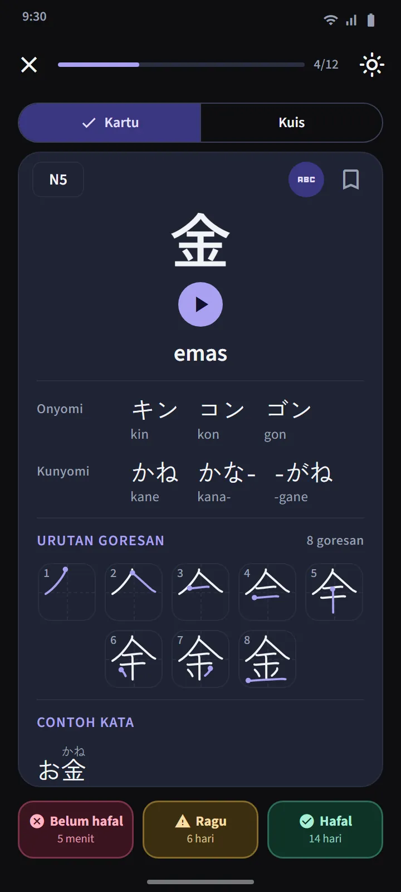
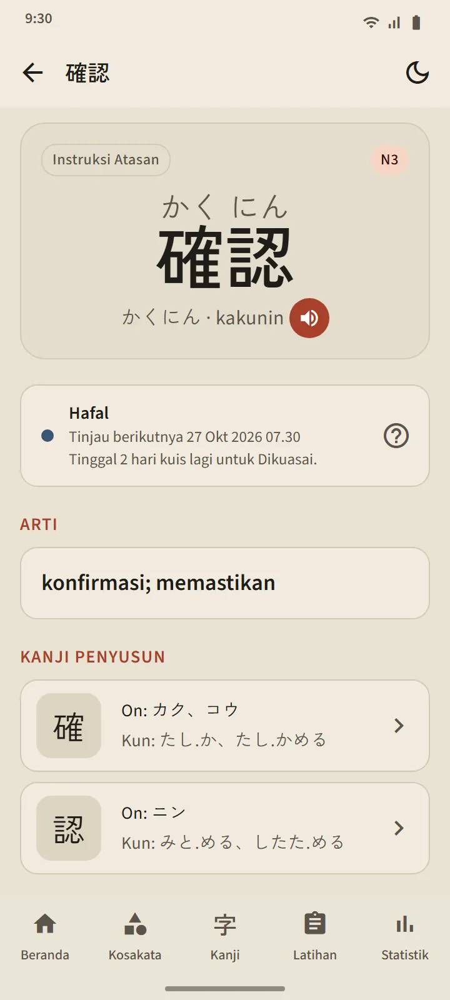

Set 25 kanji, urut kelas sekolah Jepang
Tab Kanji dibagi per level JLPT, lalu jadi set berisi sekitar 25 kanji. Urutan di dalam level mengikuti urutan belajar di sekolah Jepang (kelas 1 SD dulu), lalu jumlah goresan dari yang paling sedikit; deret yang wajar dipelajari bersama, seperti angka, nama hari, dan musim, dijaga tetap berurutan. Tiap baris set memperlihatkan deretan kanjinya, bar kemajuan, jumlah hafal dan dikuasai, dan label "Kuis siap" atau jumlah yang jatuh tempo.
| Level | Kanji | Akses |
|---|---|---|
| N5 | 103 | Gratis |
| N4 | 181 | Gratis |
| N3 | 370 | Premium |
| N2 | 369 | Premium |
| N1 | 1.207 | Premium |


Kartu dan kuis kanji
Depan kartu hanya kanjinya. Baliknya: arti, bacaan On dan Kun (dengan romaji kalau kamu mau), diagram urutan goresan satu kotak per goresan dengan titik awal yang ditandai, dan contoh kata yang memakainya. Tiga tombol yang sama dengan kartu kosakata menjadwalkannya ulang.
Kuis set terbuka pada 10 kanji Hafal atau Dikuasai, dengan tiga jenis soal: kanji ke arti, arti ke kanji, dan kanji ke bacaan. Aturan Dikuasai sama: benar di kuis pada tiga hari berbeda. Tinjau kanji di puncak tab mengumpulkan semua kanji yang jatuh tempo dari semua set, dan Kuis campuran menguji lintas set.


Detail kanji dan deck khusus
Halaman detail tiap kanji memuat arti, tahap dan jadwal tinjauan berikutnya, bacaan, diagram goresan, dan contoh kata; halaman detail kata menautkan ke kanji penyusunnya. Seperti kosakata, kanji punya deck Ditandai, Kanji sulit, dan Kilat 60 detik, dan saklar di seksi Latihan cepat Beranda mengganti keempat petaknya ke versi kanji.


Tulis kanji dengan jari
Kanji yang sudah Hafal atau Dikuasai bisa dilatih menulisnya: yang ditampilkan hanya arti dan bacaannya, kamu menulis goresan demi goresan, dan tiap goresan langsung dinilai bentuk, arah, dan urutannya, tanpa internet. Tiga cara berlatih: Dari ingatan, Dengan bayangan, dan Ketuk urutan. Sebuah kanji dihitung "bisa ditulis" sesudah ditulis dari ingatan tanpa bantuan pada dua hari berbeda.


Sumber data
Arti dan bacaan dari KANJIDIC (Electronic Dictionary Research and Development Group), urutan goresan dari KanjiVG, keduanya berlisensi CC BY-SA. Level kanji adalah perkiraan berdasarkan daftar JLPT lama; JLPT sekarang tidak menerbitkan daftar kanji resmi.